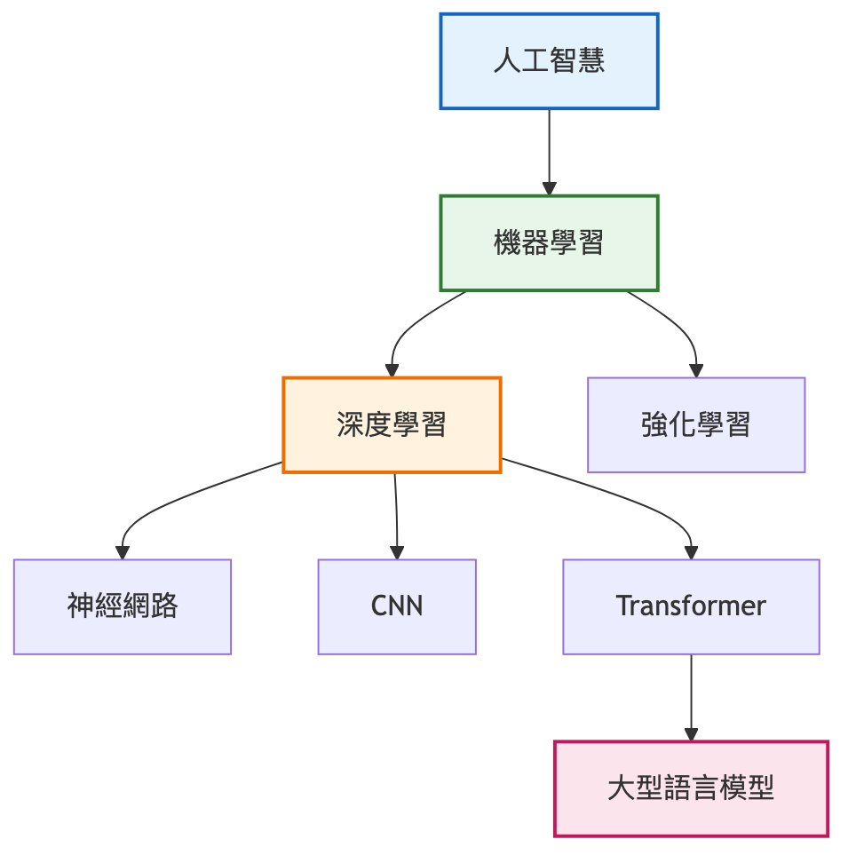
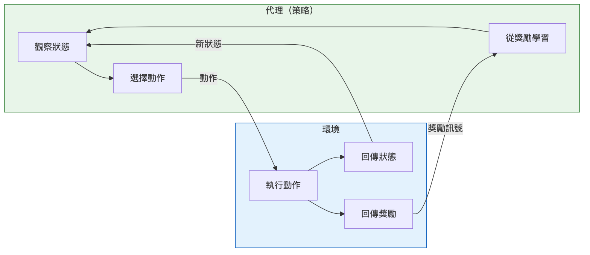
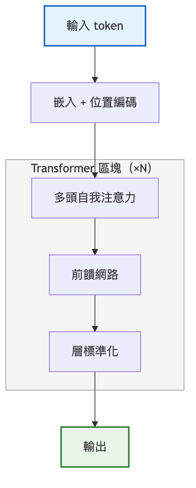
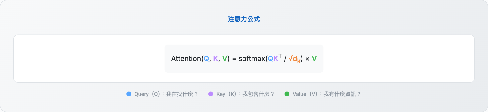
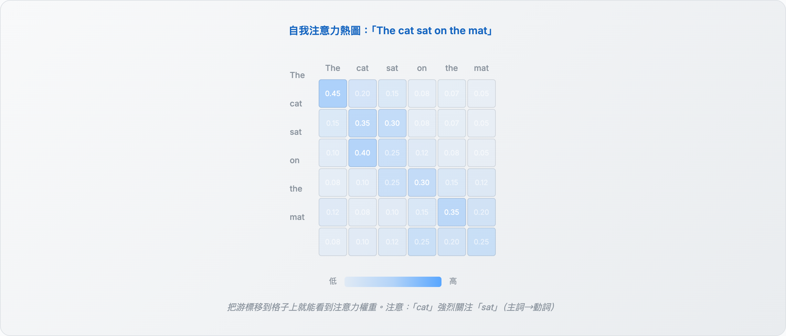
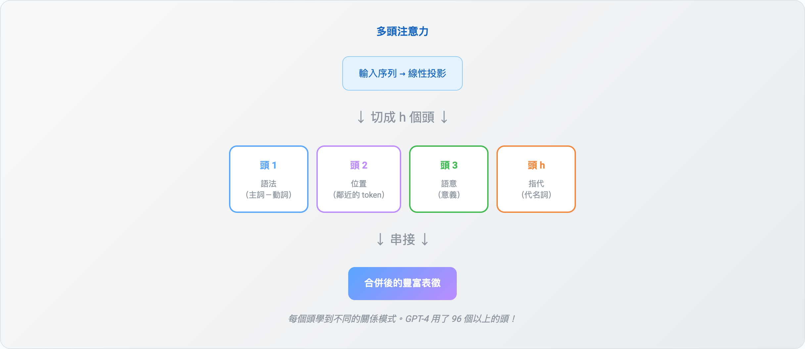
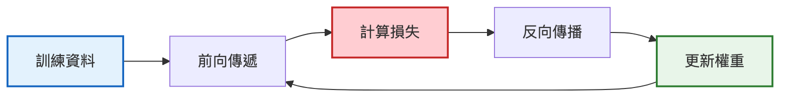
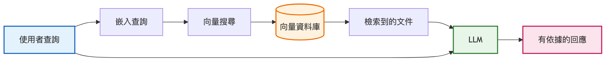
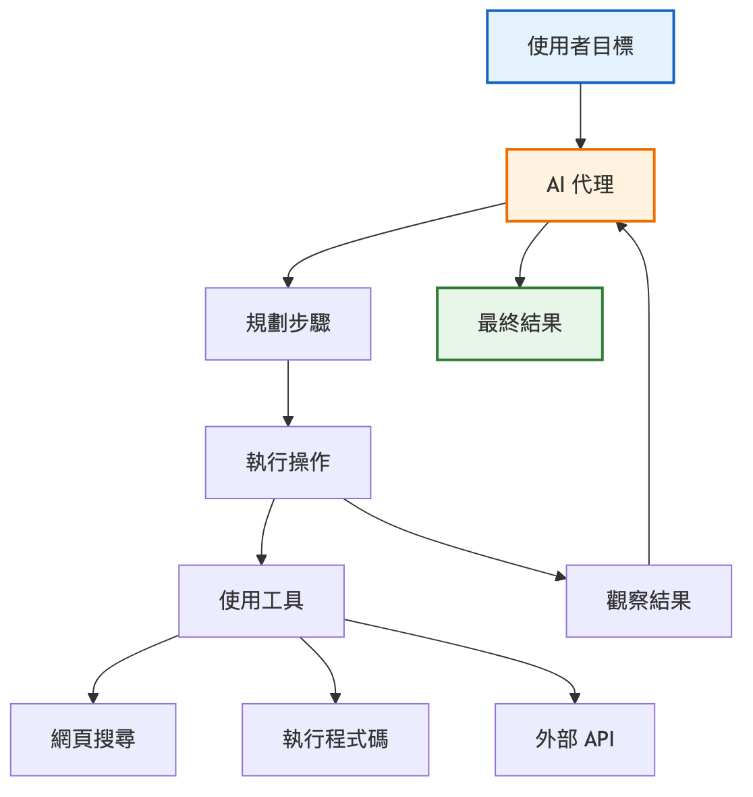

剛開始接觸 AI 與機器學習（Machine Learning）時，滿滿的術語常讓人吃不消。「Transformer」、「反向傳播」（backpropagation）、「RAG」到處都有人講，基礎沒打穩就容易迷路。
無論你是用 AI 開發應用的開發者、正要鑽進 ML 的工程師，還是只想搞懂 ChatGPT、Claude 這類工具背後技術的人，這份指南都合用。我挑出的 30 個術語（terms），在研究論文、技術討論與真實 AI 專案裡反覆出現。
每個術語都有明確定義、說明它為什麼重要，並附上真實 AI 系統裡的實例。我們就從最底層開始建立 AI 詞彙。
這篇文章是一份實用的視覺化詞彙表，收錄 30 個現代開發者該懂的 AI／ML 概念。
目錄（Table of Contents）
- 1. 基礎概念（Foundational Concepts）
- 2. 架構與模型設計（Architecture & Model Design）
- 3. 注意力機制（Attention Mechanisms）
- 4. 訓練與最佳化（Training & Optimization）
- 5. 微調與效率（Fine-Tuning & Efficiency）
- 6. 模型評估（Model Evaluation）
- 7. 提示與推理（Prompting & Reasoning）
- 8. 基礎設施與檢索（Infrastructure & Retrieval）
- 9. 現代 AI 系統（Modern AI Systems）
為什麼是這 30 個術語？
不管是打造第一個 AI 代理（agent）、把 LLM 整合進應用程式，還是想聽懂 ML 團隊在講什麼，這份詞彙表收的都是每天會碰到的核心詞。我按基礎概念到代理式 AI（agentic AI）這類現代做法排列，並附上互動式視覺化，把抽象概念變得具體。
1. 基礎概念（Foundational Concepts）
進入進階主題之前，先把 AI 與機器學習的基本積木立起來。

1.1 機器學習（Machine Learning）
AI 的一個子集，系統從資料中學習模式，而不是靠人工寫死的規則。與其寫下「如果信件內容有『免費送錢』就標成垃圾信」這種規則，我們改為提供數千個範例，讓演算法自己找出模式。
為什麼重要：ML 是其他一切的底層。推薦系統、詐欺偵測、搜尋引擎，全都用上 ML。搞懂這個核心範式，才知道自己的問題該用哪種方法。
主要分成三類：
- 監督式學習（Supervised Learning）：從有標籤的範例學習（輸入 → 輸出配對）
- 非監督式學習（Unsupervised Learning）：在沒有標籤的資料中找模式
- 強化學習（Reinforcement Learning）：靠嘗試錯誤與獎勵學習
1.2 深度學習（Deep Learning）
機器學習的子集，用多層神經網路（所以叫「深度」）學習複雜模式。這個「深度」讓模型學到階層式表徵：淺層偵測簡單特徵（邊緣、顏色），深層再把它們組合成複雜概念（人臉、物體）。
現代 AI 的重大突破大多靠深度學習：影像辨識、語音合成、語言模型、玩遊戲的代理。
1.3 神經網路（Neural Network）
仿人類大腦的運算系統，由分層排列、彼此相連的節點（神經元）組成。每條連線都帶著一個權重，會隨著學習調整。
1.4 強化學習（Reinforcement Learning，RL）
一種學習範式：代理透過與環境互動來學習，依動作拿到獎勵或懲罰。監督式學習會直接給正確答案，RL 代理則是在嘗試錯誤中自己找出最佳策略，就像學騎腳踏車，摔幾次、調整一下就會了。
主要元件：代理（學習者）、環境（互動對象）、狀態（當下處境）、動作（代理能做的事）、獎勵（回饋訊號）。

RL 迴路：代理觀察狀態、採取動作、拿到獎勵、學習，然後重複。
為什麼重要：AI 幾項最亮眼的成果都來自 RL。AlphaGo 用 RL 擊敗圍棋世界冠軍，而圍棋的可能盤面比宇宙裡的原子還多。到了今天，RL 是代理式 AI 系統的核心：代理得規劃多步驟動作、使用工具，還要適應變動的環境。我們打造能上網、寫程式、管理工作流的 AI 代理時，用的就是 RL 的原理。
AlphaGo 這類遊戲代理，以及學習複雜動作的機器人系統，背後的訓練方法都是 RL。近來 RLHF（Reinforcement Learning from Human Feedback，人類回饋強化學習）成了對齊 LLM 的關鍵：GPT-4、Claude 這些模型就是這樣學會當個有幫助而非有害的助手。流程是代理產生回應、人類評分，模型再從這個回饋訊號學習。
2. 架構與模型設計（Architecture & Model Design）
認識模型架構，有助於為任務挑對方法。
2.1 Transformer
2017 年論文《Attention Is All You Need》提出的神經網路架構。它用自我注意力平行處理整個序列，改變了語言模型的打造方式。RNN 得依序處理 token，Transformer 則能一次看到所有 token。
為什麼重要：今天在用的主要 LLM（GPT-4、Claude、Gemini、LLaMA）全都建立在 Transformer 架構上。搞懂 Transformer，才明白模型為什麼有脈絡上限、為什麼跑起來這麼貴，以及注意力機制怎麼運作。這是現代 AI 裡最重要的一個架構。

Transformer 架構把輸入經過嵌入、多個注意力區塊後產生輸出。GPT（2018）、BERT（2018）、Claude 與 Gemini 全都是基於 Transformer。
2.2 編碼器／解碼器（Encoder/Decoder）
序列到序列任務裡兩個互補的元件：
- 編碼器（Encoder）：把輸入壓縮成稠密表徵（理解）
- 解碼器（Decoder）：從這個表徵生成輸出（生成）
BERT 只用編碼器（理解），GPT 只用解碼器（生成），T5 兩者都用（翻譯、摘要）。
2.3 專家混合（Mixture of Experts，MoE）
一種架構：存在多個專門的「專家」網路，但每個輸入只啟用其中一部分。由「路由器」網路決定該用哪些專家。MoE 讓模型可以做得很大，運算卻很省。
輸入 token：「code」
Mixtral 8x7B 有 8 個專家網路，但每個 token 只用 2 個。總參數 47B，單次前向傳遞實際只啟用 13B。
2.4 分詞（Tokenization）
把文字切成模型能處理的小單位（token）的過程。現代分詞器用 BPE（Byte Pair Encoding）或 SentencePiece 這類子詞演算法。
例如：「unhappiness」→ [「un」、「happiness」]。子詞分詞讓模型看懂詞的各個部分，也能靠組合已知子詞來處理罕見詞。
為什麼重要：搞懂分詞，就能解釋 GPT-4 為什麼算字母常算錯：它看到的不是單一字元，而是一塊塊 token。
3. 注意力機制（Attention Mechanisms）
Transformer 之所以這麼有效，關鍵就在注意力。
3.1 自我注意力（Self-Attention）
一種機制，讓序列中的每個位置都能關注其他所有位置，並衡量彼此的相關程度。對每個 token，模型會算出：
- Query（Q）：我在找什麼？
- Key（K）：我包含什麼？
- Value（V）：我有什麼資訊？


3.2 多頭注意力（Multi-Head Attention）
平行執行多組自我注意力，每組有各自學到的權重（也就是不同的「頭」）。多個頭讓模型能同時關注不同表徵子空間裡的資訊。

某個頭可能專注語法關係（主詞與動詞的一致性），另一個關注語意關係（詞義），再一個捕捉位置模式。
4. 訓練與最佳化（Training & Optimization）
理解模型如何從資料中學習。

訓練迴路：前向傳遞 → 計算損失 → 反向傳播 → 更新權重 → 重複。
4.1 梯度下降（Gradient Descent）
一種最佳化演算法，反覆調整模型參數以最小化損失函數。它先算出梯度（損失上升最陡的方向），再朝反方向移動。
變體：SGD（隨機梯度下降）、Adam（自適應學習率）、AdamW（加上權重衰減）。
4.2 反向傳播（Backpropagation）
利用微積分的連鎖律，把誤差從輸出往輸入的方向反向傳遞，藉此計算神經網路的梯度。這樣就能看出每個權重對誤差的貢獻有多大。
4.3 損失函數（Loss Function）
用來衡量模型預測錯得多離譜的函數。訓練的目標就是把這個損失壓到最低。常見的損失函數有：
- 交叉熵（Cross-Entropy）：分類任務
- MSE（Mean Squared Error，均方誤差）：迴歸任務
- 對比損失（Contrastive Loss）：嵌入學習
4.4 訓練與推論（Training vs Inference）
訓練：透過調整權重從資料中學習。成本高昂（數週到數月、數千張 GPU）。推論：用訓練好的模型做預測。很快（毫秒等級、單張 GPU）。
GPT-4 只訓練過一次，代價驚人。之後每一次 API 呼叫都是推論，快得多，也便宜得多。
4.5 超參數（Hyperparameter）
控制訓練過程、但不是從資料學來的設定值：
- 學習率（Learning rate）：梯度下降的步長
- 批次大小（Batch size）：更新權重前處理的樣本數
- 層數／頭數：模型架構
- Dropout 比率：正則化強度
5. 微調與效率（Fine-Tuning & Efficiency）
有效率地調整與最佳化模型的技術。
5.1 微調（Fine-tuning）
拿預訓練好的模型，再用特定資料集或任務繼續訓練。比起從零開始訓練，這樣把通用知識搬進專門領域更有效率。
類型有：全參數微調（所有權重）、參數高效微調（只動一部分權重）、指令微調（學會遵循指令）。
5.2 LoRA／QLoRA
LoRA（Low-Rank Adaptation，低秩適應）：不動全部權重，改為加上小的可訓練「適配器」矩陣。原始權重凍結，只訓練適配器。
QLoRA：把 LoRA 與 4-bit 量化結合，一張 48GB GPU 就能微調 65B 模型。
5.3 量化（Quantization）
降低模型權重的精度（例如 FP32 → INT8 → INT4），以減少記憶體用量、加快推論。現代量化方法（GPTQ、AWQ）保住品質的程度出乎意料地好。
為什麼重要：這就是在電競筆電上跑得動 Llama 70B 的原因。4-bit 量化讓這件事成真。
5.4 知識蒸餾（Knowledge Distillation）
訓練較小的「學生」模型去模仿較大的「老師」模型的行為。學生學的是老師的軟性機率分布，而不只是硬標籤，因此能吸收單靠訓練資料得不到的細緻知識。
為什麼重要：我們常想要 70B 參數模型的智力，卻因為成本或延遲限制只能部署 7B 模型。蒸餾補上了這個落差。學生不只學到「這是貓」，還學到「這是 90% 的貓、8% 的狗、2% 的狐狸」，一併繼承老師對相似概念的理解。
真實案例：DistilBERT 用少 40% 的參數，保住 BERT 97% 的效能。微軟的 Phi 系列模型有一部分是用更大模型生成的合成資料訓練出來的。手機和筆電上能跑得動可用的模型，靠的就是這套技術：把巨型模型的知識壓縮成更小、能部署的版本。
6. 模型評估（Model Evaluation）
理解模型的表現與失效模式。
6.1 過擬合／欠擬合（Overfitting / Underfitting）
過擬合：模型把訓練資料背了下來，遇到新資料就失手（訓練準確率高，測試準確率低）。欠擬合：模型太簡單，抓不到模式（兩邊都差）。
過擬合的徵兆：訓練損失持續下降，驗證損失卻開始上升。
6.2 正則化（Regularization）
在訓練時加入限制，藉此避免過擬合的做法：
- Dropout：訓練時隨機關閉部分神經元
- L1／L2 正則化：懲罰過大的權重
- 早停（Early stopping）：驗證損失開始上升就停
- 資料增強（Data augmentation）：製造訓練資料的變化版本
6.3 幻覺（Hallucination）
AI 模型生成聽起來合理、實際上卻不正確的資訊。LLM 特別容易出現這種情況，因為它們受的訓練是產出流暢的文字，不保證文字為真。
為什麼重要：這正是正式上線的 AI 系統需要 RAG、護欄（guardrails）與人為監督的主因。
緩解手段：RAG（讓回應有文件依據）、思維鏈（攤開推理過程）、信心校準、人類回饋。
7. 提示與推理（Prompting & Reasoning）
讓語言模型給出更好輸出的技巧。
7.1 提示工程（Prompt Engineering）
精心設計輸入，引導 LLM 行為的實作。主要技巧：
- 零樣本（Zero-shot）：直接提問，不給範例
- 少樣本（Few-shot）：在提示裡附上範例
- 角色扮演（Role-playing）：「你是一位專家……」
- 結構化輸出（Structured output）：要求 JSON、markdown 等格式
7.2 脈絡工程（Context Engineering）
範圍更廣的做法：管理餵給 AI 系統的所有資訊，包括系統提示、檢索到的文件、對話歷史、工具輸出、使用者偏好。
提示工程關注的是使用者那則訊息怎麼寫，脈絡工程看的是全貌：系統提示要放什麼？RAG 該檢索哪些文件？對話歷史塞多少才不超出脈絡視窗？工具輸出或範例要不要放進去？
為什麼重要：對正式上線的 AI 系統來說，脈絡工程往往比挑哪個模型更要緊。脈絡設計得好，小模型經常勝過脈絡給得差的大模型。我用 ADK 打造代理的經驗裡，脈絡管理做不做得好，常常就是展示品與可上線系統的分野。
7.3 思維鏈（Chain-of-Thought，CoT）
一種提示技巧，模型在給出最終答案前先一步步攤開推理過程。只要加上一句「Let's think step by step」，數學與邏輯任務的準確率就能提升 10-40%。
8. 基礎設施與檢索（Infrastructure & Retrieval）
打造把 LLM 接上外部知識的系統。
8.1 嵌入（Embedding）
在連續空間裡用稠密向量表示資料，相似的東西會靠在一起。文字嵌入捕捉語意：「king」和「queen」很近，「king」和「apple」很遠。
最著名的例子：embedding("king") - embedding("man") + embedding("woman") ≈ embedding("queen")
8.2 向量資料庫（Vector Database）
專門用來儲存與查詢高維向量的資料庫。它採用近似最近鄰（ANN）演算法，在數百萬筆嵌入中快速做相似度搜尋。
常見選擇：Pinecone、Weaviate、ChromaDB、Milvus、pgvector（PostgreSQL 擴充套件）。
8.3 檢索增強生成（Retrieval-Augmented Generation，RAG）
一種技巧：生成回應之前，先檢索相關文件並放進 LLM 的脈絡。這讓回應有事實依據、減少幻覺，也能取用私有或最新的資訊。

RAG 流程：查詢 → 嵌入 → 搜尋向量資料庫 → 取出相關文件 → 擴充提示 → 生成有依據的回應。
9. 現代 AI 系統（Modern AI Systems）
今天的 AI 系統是怎麼打造的。
9.1 MCP（Model Context Protocol）
Anthropic 推出的開放協定，用標準方式讓 AI 應用程式連接外部資料來源與工具。與其為每項服務各寫一套整合，MCP 提供一個通用介面。
有了 MCP，AI 助手就能透過標準化的「MCP 伺服器」連接 Google Drive、Slack、GitHub、資料庫等服務，直接插上就能用。
9.2 代理式 AI（Agentic AI）
能自主規劃、做決策、使用工具並採取行動來完成目標的 AI 系統。它不只回答問題，還能進行多步驟推理與執行。

代理式 AI 迴路：接收目標 → 規劃步驟 → 使用工具執行操作 → 觀察結果 → 持續迭代，直到目標完成。
代理式 AI 可以研究主題 → 寫程式 → 測試 → 修正錯誤 → 部署，全程自主完成，只需極少的人為介入。
結語（Conclusion）
這 30 個術語構成現代 AI 開發的詞彙。無論你是在用 LLM、訓練自訂模型，還是設計 AI 系統，理解這些概念都能幫助你和團隊有效溝通，做出更好的技術決策。
把這份詞彙表存起來，當作日後查閱的參考。AI 領域變化很快，但這些基礎概念依然適用。
資源（Resources）
- Attention Is All You Need：最初的 Transformer 論文
- LoRA: Low-Rank Adaptation：參數高效微調
- Chain-of-Thought Prompting：逐步推理
- RAG: Retrieval-Augmented Generation：讓 LLM 以知識為依據
- Model Context Protocol (MCP)：AI 整合的開放協定